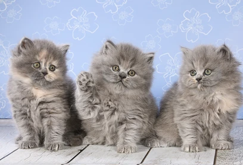

Кошка которая живет у тебя дома
Не секрет что многие заводят себе маленького друга… или не совсем маленького. Например собачек, попугайчиков, кошек, хомячков, бурундучков... Иногда кого с редких видов или наоборот хищников дикой природы. И зачастую домашние питомцы очень похожи характером на своего хозяина.
Так вот у меня живет свой маленький дьявол днем, топотун ночью. и милый пушистик - в перерывах на сон. И это кошка. Обчная, домашняя кошка.
Очень не хотела брать длинношерстных, но решение принимала не только я, но и моя семья. А вернее дочка… И приглянулся нам миленький пепельный комочек. С маленькими ушками, хвостиком как "шило" и очень миленькими серыми глазками. Поселили мы у себя заморскую красавицу, а именно “британку длинношерстную”.
!! Британская длинношерстная кошка - классический домашний питомец с красивой шерсткой,
милой мордочкой и покладистым характером
И выросло с этого маленького комочка совсем не миленькое и покладистое животное.
Как оказалось характер скверный… просто так не дается в руки. и приходит только попросить кушать ну или если что-то приснится плохое… И очень не любит посторонних людей.
Главное что мне нравится в описании этой породы - Дружелюбие, доброта и игривость
Вот в этом моменте можно поспорить… наверное моя кошка с очень интересным характером… Дружелюбность, и добротой не особо делится, можно даже и лапой получить, если не оставить ее вовремя. А вот играться она обожает. Почти никогда не откажется от игры. Любит фантики, мячики, перья. Иногда может приносить в зубах мячик с бумаги чтобы с ней поигрались.Не смотря на свой характер, плюсов все равно больше
- хорошее здоровье;
- ум и интеллект;
- красивая внешность;
- не требует постоянного внимания;
- несложный уход;
- преданность хозяину;
- терпеливость
Продолжение следует...
Больше о домашних любимцах можно узнать перейдя по ссылке